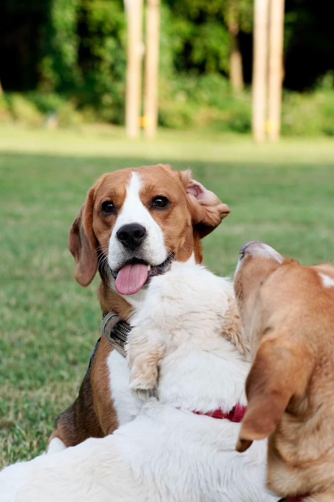

Counter Surfing: Why Dogs Do It and How to Stop It

Counter surfing is uniquely hard to train away because of one simple fact: it's almost never caught in the act, and every successful theft is its own reward. Understanding that dynamic is the key to actually fixing it, rather than just being frustrated by it.
Why it's so hard to stop through correction alone
A dog that grabs food off the counter while no one's in the room gets the full reward — the food — with zero consequence, since there's no one there to interrupt it. Even a dog corrected every time they're caught can keep counter surfing indefinitely if they're succeeding unnoticed most of the time, because intermittent, unpredictable rewards are actually the hardest pattern of all to extinguish.
Management first: remove the payoff
- Push food, wrappers, and dishes back from the counter edge — out of reach even for a tall dog standing on hind legs.
- Use the stove's back burners and keep pot handles turned inward while cooking.
- Store cutting boards and food prep items off the counter between uses.
- Consider baby gates or a tether to keep the dog out of the kitchen during food prep and cleanup, especially early in training.
This step matters more than any training exercise, because every uninterrupted success actively strengthens the habit. No amount of training "outpaces" a behavior that's still getting rewarded on the side.
Teach an incompatible behavior
A solid "place" or mat command — sending the dog to a specific spot and rewarding them for staying there — gives them something to do during cooking and meal prep that's physically incompatible with counter surfing. Build this command separately first in a low-distraction setting, then introduce it specifically during kitchen activity, starting with short durations and building up.
A supervised booby trap can help, used carefully
Some trainers recommend a setup where an unstable, empty stack of lightweight items topples harmlessly when a dog puts paws on the counter — startling but not hurting them, and crucially not associated with a person, so the dog learns counters themselves are unpredictable rather than becoming afraid of people in the kitchen. This should never involve anything that could actually injure the dog, and works best as a supplement to the management and training approaches above, not a replacement for them.
Practice deliberately, don't just wait and hope
Set up low-stakes practice sessions: place a boring item near the counter edge while the dog is on their mat command, and reward heavily for staying put despite the temptation. Gradually increase the tempting value of what's near the edge as the dog's impulse control improves, always under supervision so a lapse doesn't become a self-rewarded success.